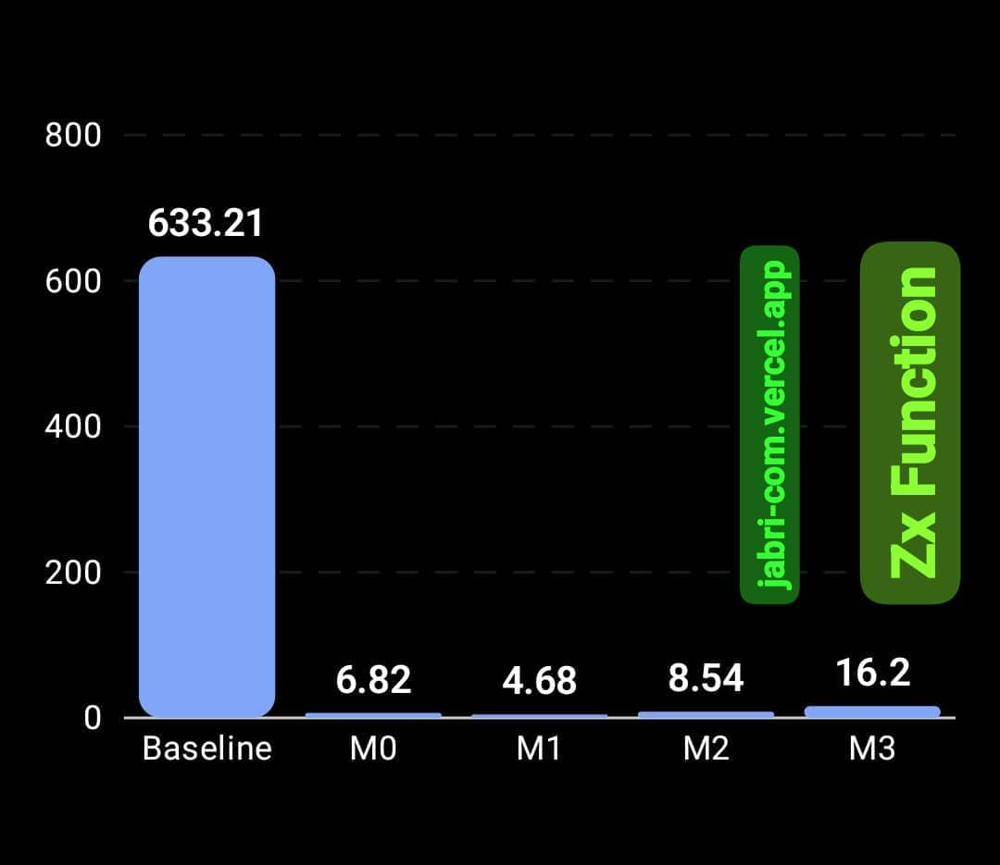
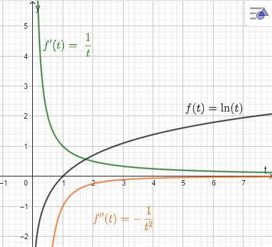

🏛️ الفحص الخارجي

🏛️ الفحص الخارجي

🏛️ الفحص الخارجي

🏛️ الفحص الخارجي
دالة ZX — التوثيق المجمّد
آخر تحديث مجمّد: 23 نوفمبر 2026 — 23/11/2026 | إغلاق الجولة الخارجية والعودة إلى ZX
01 — الهوية والحدود
- نعمل على ZX ودوالها ومشتقاتها وتكاملاتها.
- لا نجعل ريمان هدفاً للبحث.
- لا نسمي ZX معادلة التوحيد.
- لا نخلطها بشجرة التوحيد أو المعكوس الذهبي والفضي أو زاوية 22.5.
02 — درجات التنبؤ
درجة 1: تنبؤ مشتق رياضياً.
درجة 2: تنبؤ تحقق عددياً بصورة مستقلة.
درجة 3: تنبؤ ثبت ضمن شروط محددة.
03 — التعريف المعتمد
\[
Z_x(n,t) = 2\pi n + \ln(n) + C(t)
\]
\[
Z_x(0,t) = C(t)
\]
\[
C(t) = 1 - \exp\left(\frac{-69.8 t}{100 \times 13.799}\right)
\]
\[
C_{\text{now}} \approx 0.50242053 \quad | \quad A_{\text{now}} \approx 0.49757947 \quad | \quad C + A = 1
\]
04 — المشتقات
\[
D_n = Z_x(n+1) - Z_x(n) = 2\pi + \ln\left(1+\frac{1}{n}\right)
\]
\[
\frac{dZ_x}{dn} = 2\pi + \frac{1}{n}
\]
\[
\frac{dZ_x}{dt} = \frac{dC}{dt}
\]
07 — سجل الجولة المغلق: الفروق داخل ZX
\[
\widehat{D}(n+1) = D_n - \frac{1}{n(n+1)}
\]
\[
\widehat{Z}(n+1) = Z_x(n) + \widehat{D}(n+1)
\]
الاختبار الداخلي المجمّد 0-199 — الفروق المتتالية على ZX نفسها:
| Model | MAE |
|---|
| \( M_0 \) | 6.290117 |
| \( M_1 \) | 0.000050 |
| \( M_2 \) | 0.000000768 |
| \( M_3 \) | \( 1.84 \times 10^{-8} \) — ليست صفراً |
التصحيح المسجل: لا نصنف هذا درجة 2، لأن التحقق من قيم مولدة بالصيغة نفسها ليس تحققاً مستقلاً.
مصدر الخطأ: الخطأ ليس في ZX نفسها، بل في القانون الاستقرائي التقريبي. الخطأ تراكمي وليس عشوائياً. مثال n=11: الفرق الدقيق 6.363228 مقابل الاستقرائي 6.362621.